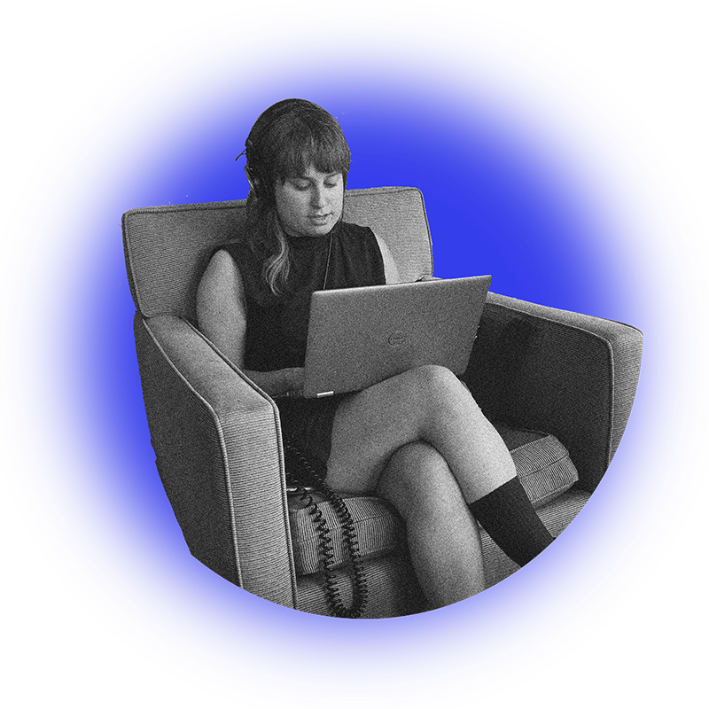

Award-winning journalist and podcast producer with experience in public radio, print, and digital media. Can deliver accurate, compelling and clean copy reliably and on a deadline. Currently hosting All Things Considered for CAI, local NPR for Cape Cod, its nearby islands, and the South Coast of Massachusetts. Specializing in reporting on the environment, public health, education, and human services. Passionate about storytelling that connects people to important local issues and amplifies diverse voices.
Gilda
Geist
Phone: 240-893-7294
Email: gildageist@gmail.com
BlueSky: gildageist.bsky.social
LinkedIn: Gilda Geist
Muck Rack: muckrack.com/gilda-geist
Journalist &
Podcast
Producer

About
Notable
Reporting
Awards
Best podcast - The Upper Cape Catch
New England Newspaper and Press Association
Best human interest story - Faces of Affordable Housing
New England Newspaper and Press Association
Experience
HOST, ALL THINGS CONSIDERED | REPORTER
GBH | CAI | 2024 - present
- Prepares and delivers timely and accurate regional newscasts that reflect a range of subject matter and geographic diversity, making sure the newscasts flow well in and out of NPR programming.
- Reports and produces news spots, interviews, and features on pressing local issues.
- Coordinates, hosts, and produces interviews (taped and live) with newsmakers, community members and reporters.
- Appears on CAI's weekly news roundup, a live program where reporters discuss what they have covered that week.
- Produces written versions of stories for the station's website.
- Substitute hosts for Morning Edition.
NEWS REPORTER
The Falmouth Enterprise | 2022 - 2024
- Pitched, wrote, and reported news and features for a weekly print and digital newspaper on Cape Cod.
- Beats focused on environment, public health, education, and human services.
- Contributed photographs and data visualization.
- Highlights included coverage of coastal climate change impacts, municipal wastewater management, the affordable housing crisis, and the disbursal of opioid settlement funds.
- Developed and maintained positive working relationships with sources and the community.
PODCAST PRODUCER
The Upper Cape Catch | 2022 - 2024
- Co-founded and co-produced an award-winning podcast for the Enterprise.
- Content spanned stories from four Cape Cod towns and a range of topics, from nitrogen loading to elementary school technology use to addiction recovery.
- Managed full content lifecycle, including writing, reporting, hosting, production and distribution.
- Maintained strong communication and effective teamwork with co-producer.
- Managed and synthesized engagement data analytics to assess success and grow the audience.
EDITOR IN CHIEF
The Justice | 2018 - 2022
- Advanced from reporter (2018) to news editor (2019) to editor in chief (2020-2021) to senior editor (2021-2022) of Brandeis University's independent print and digital newspaper.
- Served as editor in chief during the 2020 pandemic, facilitating and managing the transition to online-only publication.
- Gained experience with on-the-ground reporting and interviewing on tight deadlines.
- Sat on the executive board to provide guidance to the succeeding editor in chief.
Education
BRANDEIS UNIVERSITY
BA ENGLISH & POLITICS | JOURNALISM
- Honors: Graduated magna cum laude, Phi Beta Kappa, Humanities Fellow
- Studied under veteran journalists, including Boston Globe journalists Eileen McNamara, Neil Swidey, and Peter May.
Certificate in Math For Journalists from the Poynter Institute
Skills
- News writing and reporting
- Audio editing
- Video editing
- Interviewing
- Switchboard operation
- AP Style
- Feature writing
- Photojournalism
- Search engine optimization
- Data visualization
- Social media
- CRM (Constant Contact, MailChimp)